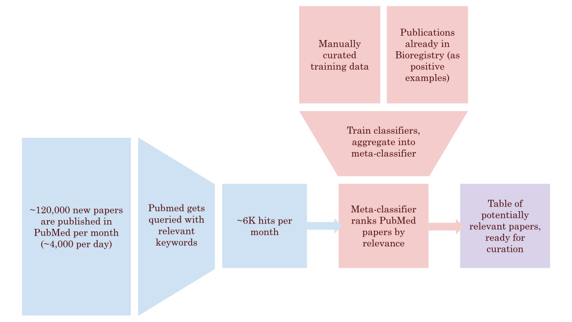

I'm currently pursuing a Bachelor's degree in Mathematics and Data Science at Northeastern University. I'm interested in decision theory and maximizing expected value.
| Software Engineer Intern, Capital One | Expected: Jun 2025 - Aug 2025 |
| Incoming Summer 2025. | |
| Research Assistant, Northeastern University (SATH Lab) | Feb 2025 - Present |
| Applying explainable deep learning and topological data analysis to study the emergence and persistence of features in time-series signal processing data. | |
| Research Assistant, Northeastern University (Gyori Lab) | May 2024 - Aug 2024 |
| Utilized TF-IDF vectorization and ensemble learning to automate resource curation for the Bioregistry. | |
| Paper Ranking Pipeline | June 2024 - July 2024 |
| Ensemble learning model used to discover new identifiers for the Bioregistry. | |
|  | |